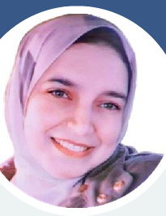

Geomorphology of caves and their ancient use on the Sheikh Said cliff, Tell El Amarna Area
32nd International Karstological School “Classical Karst”, Postojna, Slovenia · Jun 16–20, 2025
Geography & Karst Research
Doctoral Researcher in Karstology · Assistant Lecturer, Department of Geography
Studying the limestone landscapes and desert cave systems of Egypt, from the Western Desert to the Eastern Desert, through fieldwork carried out in both Egypt and Slovenia since 2016.

About
Noura is a motivated and adaptable Assistant Lecturer in Geography with experience spanning teaching, field research, and academic project coordination. Her doctoral work at the University of Nova Gorica examines karst landscapes — the distinctive terrain shaped by dissolving limestone — with a focus on cave systems and paleo-karst features across Egypt's Western and Eastern Deserts.
She has completed five research residencies at the Karst Research Institute (ZRC SAZU) in Slovenia between 2019 and 2024, and has represented her research at international symposia and IAG regional webinars for Africa since 2020. Alongside research, she teaches at Damanhur University and has served on the organizing committee of the International Symposium of Living with Landscapes since its 4th edition.
Cave systems, paleo-karst, and rock relief across Egypt's desert regions.
ArcGIS, ERDAS Imagine, and Lidar-based 3D mapping of cave environments.
Topographic survey, Total Station and GPS-based land surveying.
Oceanography, geoarchaeology, and environmental change in arid landscapes.
Education
University of Nova Gorica, Slovenia
Faculty of Humanities, University of Primorska, Koper, Slovenia
Thesis: Karst Landscape
Damanhur University, Egypt
Experience
Faculty of Arts, University of Damanhur, Egypt
Teaches Geomorphology, Environmental Geography, Physical Geography, Karstology, Geoarchaeology, GIS, Oceanography and Remote Sensing.
Karst Research Institute, ZRC SAZU, Slovenia
Research
32nd International Karstological School “Classical Karst”, Postojna, Slovenia · Jun 16–20, 2025
University of Naples “Federico II”, Italy · Jun 9–11, 2025
IAG regional webinar for Africa · Mar 7, 2025
7th Int’l Symposium of Living with Landscapes, Aswan · Nov 17–20, 2024
IAG regional webinar for Africa · Mar 4, 2024
6th Int’l Symposium of Living with Landscapes, Marsa Alam · Nov 24–27, 2023
Event site →IAG regional webinar for Africa · Mar 3, 2023
5th Int’l Symposium of Living with Landscapes, Luxor · Nov 8–11, 2022
Event site →Workshop participant, Cairo · Nov 5–8, 2022
2nd Women in Geomorphology Workshop · Mar 8, 2022
IAG regional webinar for Africa · Feb 28, 2022
IAG regional webinar for Africa · Mar 2, 2021
M. Torab & N. Fayad · 4th Int’l Symposium of Living with Landscapes, Dahab · Nov 1–5, 2020
Certifications
Achievements
International Symposium of Living with Landscapes
Contact
A Google Scholar or ORCID profile wasn’t listed on the source CV. Once available, it can be added here alongside the email.